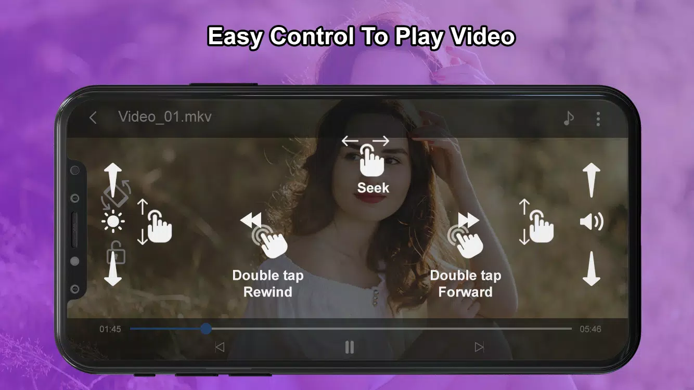
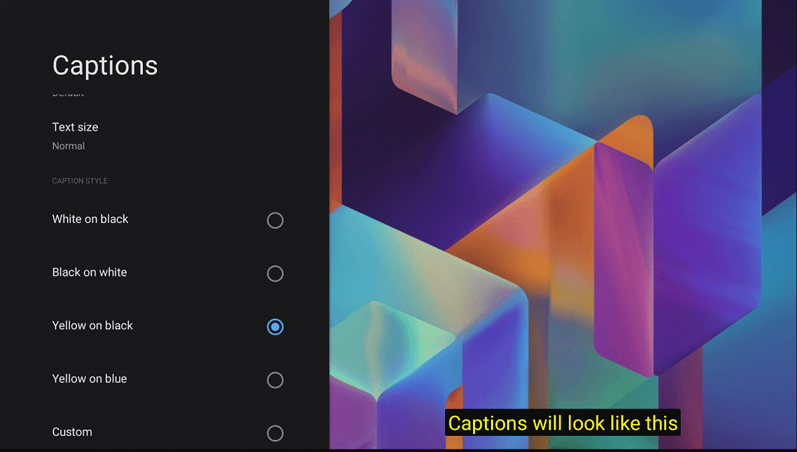

Supported formats
- Audio :
- Vorbis, Opus, FLAC, ALAC, PCM/WAVE (μ-law, A-law), MP1, MP2, MP3, AMR (NB, WB), AAC (LC, ELD, HE; xHE on Android 9+), AC-3, E-AC-3, DTS, DTS-HD, TrueHD
- Video :
- H.263, H.264 AVC (Baseline Profile; Main Profile on Android 6+), H.265 HEVC, MPEG-4 SP, VP8, VP9, AV1
- Container :
- MP4, M4A, FMP4, MOV, WebM, MKV (Matroska), Ogg, MPEG-TS, MPEG-PS, FLV (Not seekable), AVI, JPEG motion photo (Only the MP4 content is extracted)
- Subtitles :
- SRT, SSA, TTML / SMPTE-TT, VTT, DVB, WebVTT, CEA-608, SubRip
Playback feature
Audio/Subtitle track selection.Playlist support to skip to next or previous video.- Playback
speed control.
Mute option has been available.PIP (Picture in picture) on Android 8+ (resizeable on Android 11+).Resize (Fit/Crop).Volume boost.Auto frame rate matching on Android 6+.Touch lock.- 3rd party
Eualizer / audio processing support.
Pause playback when disconnecting headphones.
Gesture control
Horizontal swipe and double tap to quickly seek.Vertical swipe to change brightness (left) / volume (right).- Pinch to
zoom (Android 7+)
Application feature
- App supports
Dark and Light mode.
- Videos are listed in
Folder and list mode.
- Videos can also be displayed in
grid and list style.
Search optin to find video.Multi-select option enables you to share and delete videos.- Video file
rename option.
- Video info option lists most
advanced information about video.
- No
tracking or excessive permission.
Tap control

- Double tap on
left to rewind 10sec.
- Double tap on
right to forward 10sec.
- Double tap on
center to pause and play.
Caption styling

- Double tap on
left to rewind 10sec.
- Double tap on
right to forward 10sec.
- Double tap on
center to pause and play.